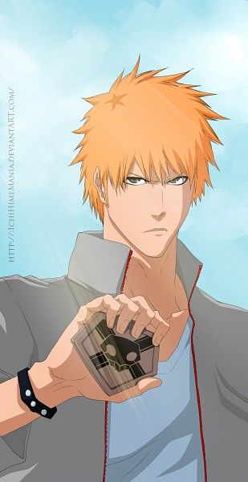

Substitute Shinigami
Kurosaki Family · Son
Ichigo Kurosaki
Substitute Soul Reaper · Protagonist
Role Substitute Shinigami · Karakura's GuardianA high school student born with the rare ability to see ghosts. After absorbing Rukia's Shinigami powers, he became a Substitute Soul Reaper — fighting Hollows to protect Karakura Town. Unknown to him, his very existence is the intersection of all three spiritual bloodlines: Shinigami, Hollow, and Quincy.
"I'm not Superman — so I can't say anything big like I'll protect everyone. But I'll protect whoever I can."